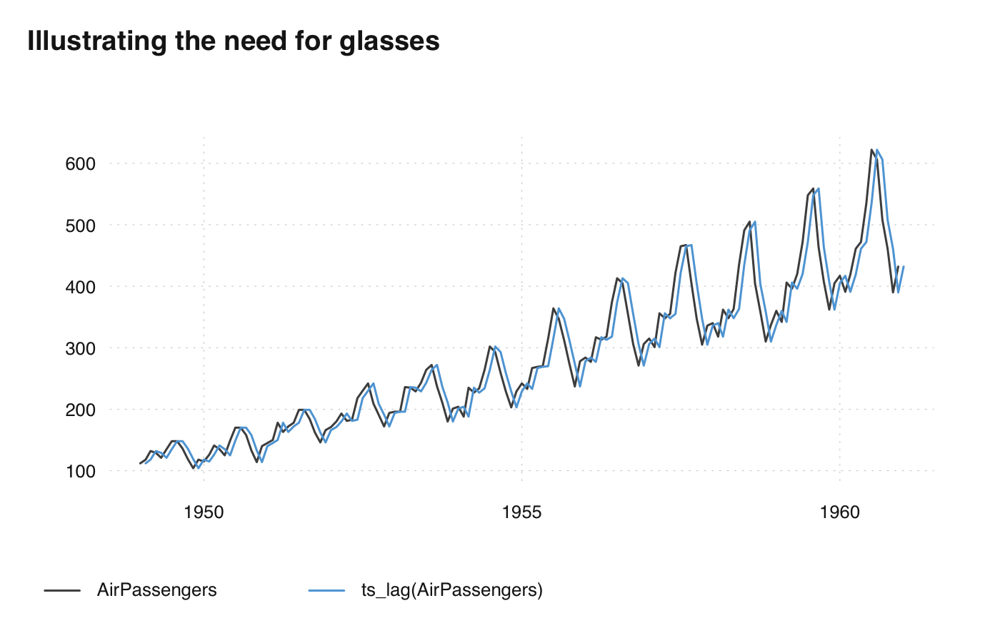

Shift time stamps in ts-boxable time series, either by a number of periods or by a fixed amount of time.
ts_lag(x, by = 1L)
| x | ts-boxable time series, an object of class |
|---|---|
| by | integer or character, either the number of shifting periods (integer), or an absolute amout of time (character). See details. |
a ts-boxable time series, with the same class as the input. If time stamp shifting causes the object to be irregular, a data frame is returned.
The lag order, by, is defined as in R base. Thus, -1 is a lag and +1 a lead
(dplyr uses an opposite definition).
If by is integer, the time stamp is shifted by the number of periods. This
requires the series to be regular.
If by is character, the time stamp is shifted by a specific amount of time.
This can be one of one of "sec", "min", "hour", "day", "week",
"month", "quarter" or"year"`, optionally preceded by a (positive or
negative) integer and a space, or followed by plural "s". This is passed to
base::seq.Date(). This does not require the series to be regular.
ts_lag(), for shifting regular series. date_shift(), for
shifting Date vectors.
head(ts_lag(AirPassengers, "1 month"))#> Feb Mar Apr May Jun Jul #> 1949 112 118 132 129 121 135head(ts_lag(AirPassengers, "1 year"))#> Jan Feb Mar Apr May Jun #> 1950 112 118 132 129 121 135ts_lag(AirPassengers, "14 day")#>#> time value #> 1 1949-01-15 112 #> 2 1949-02-15 118 #> 3 1949-03-15 132 #> 4 1949-04-15 129 #> 5 1949-05-15 121 #> 6 1949-06-15 135 #> 7 1949-07-15 148 #> 8 1949-08-15 148 #> 9 1949-09-15 136 #> 10 1949-10-15 119 #> 11 1949-11-15 104 #> 12 1949-12-15 118 #> 13 1950-01-15 115 #> 14 1950-02-15 126 #> 15 1950-03-15 141 #> 16 1950-04-15 135 #> 17 1950-05-15 125 #> 18 1950-06-15 149 #> 19 1950-07-15 170 #> 20 1950-08-15 170 #> 21 1950-09-15 158 #> 22 1950-10-15 133 #> 23 1950-11-15 114 #> 24 1950-12-15 140 #> 25 1951-01-15 145 #> 26 1951-02-15 150 #> 27 1951-03-15 178 #> 28 1951-04-15 163 #> 29 1951-05-15 172 #> 30 1951-06-15 178 #> 31 1951-07-15 199 #> 32 1951-08-15 199 #> 33 1951-09-15 184 #> 34 1951-10-15 162 #> 35 1951-11-15 146 #> 36 1951-12-15 166 #> 37 1952-01-15 171 #> 38 1952-02-15 180 #> 39 1952-03-15 193 #> 40 1952-04-15 181 #> 41 1952-05-15 183 #> 42 1952-06-15 218 #> 43 1952-07-15 230 #> 44 1952-08-15 242 #> 45 1952-09-15 209 #> 46 1952-10-15 191 #> 47 1952-11-15 172 #> 48 1952-12-15 194 #> 49 1953-01-15 196 #> 50 1953-02-15 196 #> 51 1953-03-15 236 #> 52 1953-04-15 235 #> 53 1953-05-15 229 #> 54 1953-06-15 243 #> 55 1953-07-15 264 #> 56 1953-08-15 272 #> 57 1953-09-15 237 #> 58 1953-10-15 211 #> 59 1953-11-15 180 #> 60 1953-12-15 201 #> 61 1954-01-15 204 #> 62 1954-02-15 188 #> 63 1954-03-15 235 #> 64 1954-04-15 227 #> 65 1954-05-15 234 #> 66 1954-06-15 264 #> 67 1954-07-15 302 #> 68 1954-08-15 293 #> 69 1954-09-15 259 #> 70 1954-10-15 229 #> 71 1954-11-15 203 #> 72 1954-12-15 229 #> 73 1955-01-15 242 #> 74 1955-02-15 233 #> 75 1955-03-15 267 #> 76 1955-04-15 269 #> 77 1955-05-15 270 #> 78 1955-06-15 315 #> 79 1955-07-15 364 #> 80 1955-08-15 347 #> 81 1955-09-15 312 #> 82 1955-10-15 274 #> 83 1955-11-15 237 #> 84 1955-12-15 278 #> 85 1956-01-15 284 #> 86 1956-02-15 277 #> 87 1956-03-15 317 #> 88 1956-04-15 313 #> 89 1956-05-15 318 #> 90 1956-06-15 374 #> 91 1956-07-15 413 #> 92 1956-08-15 405 #> 93 1956-09-15 355 #> 94 1956-10-15 306 #> 95 1956-11-15 271 #> 96 1956-12-15 306 #> 97 1957-01-15 315 #> 98 1957-02-15 301 #> 99 1957-03-15 356 #> 100 1957-04-15 348 #> 101 1957-05-15 355 #> 102 1957-06-15 422 #> 103 1957-07-15 465 #> 104 1957-08-15 467 #> 105 1957-09-15 404 #> 106 1957-10-15 347 #> 107 1957-11-15 305 #> 108 1957-12-15 336 #> 109 1958-01-15 340 #> 110 1958-02-15 318 #> 111 1958-03-15 362 #> 112 1958-04-15 348 #> 113 1958-05-15 363 #> 114 1958-06-15 435 #> 115 1958-07-15 491 #> 116 1958-08-15 505 #> 117 1958-09-15 404 #> 118 1958-10-15 359 #> 119 1958-11-15 310 #> 120 1958-12-15 337 #> 121 1959-01-15 360 #> 122 1959-02-15 342 #> 123 1959-03-15 406 #> 124 1959-04-15 396 #> 125 1959-05-15 420 #> 126 1959-06-15 472 #> 127 1959-07-15 548 #> 128 1959-08-15 559 #> 129 1959-09-15 463 #> 130 1959-10-15 407 #> 131 1959-11-15 362 #> 132 1959-12-15 405 #> 133 1960-01-15 417 #> 134 1960-02-15 391 #> 135 1960-03-15 419 #> 136 1960-04-15 461 #> 137 1960-05-15 472 #> 138 1960-06-15 535 #> 139 1960-07-15 622 #> 140 1960-08-15 606 #> 141 1960-09-15 508 #> 142 1960-10-15 461 #> 143 1960-11-15 390 #> 144 1960-12-15 432